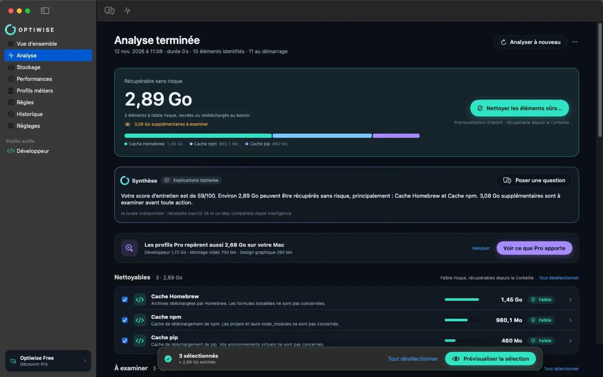
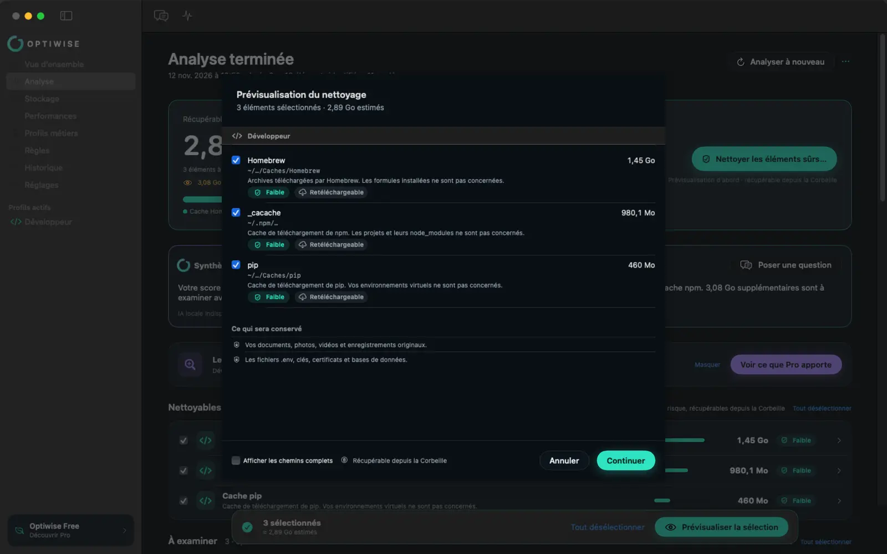
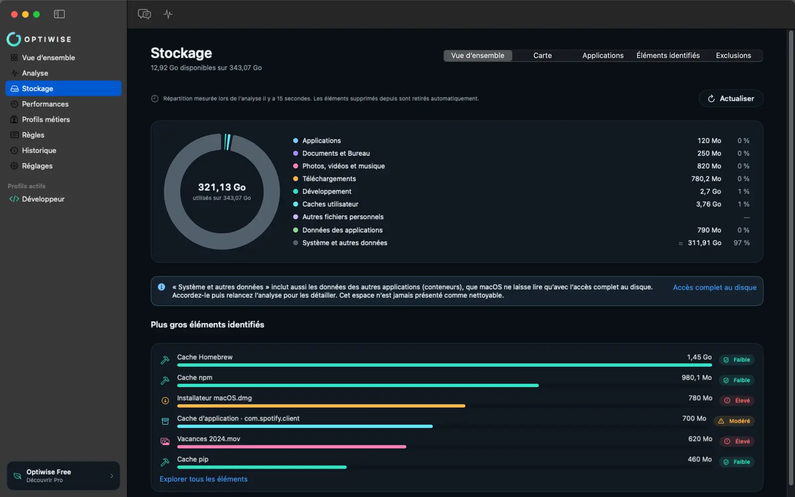

Des gigaoctets récupérés
Caches de Homebrew, npm, pip, Xcode, Docker, fichiers temporaires, gros fichiers oubliés : Optiwise chiffre ce que vous pouvez libérer, catégorie par catégorie.
 Pour macOS Sonoma et ultérieur
Pour macOS Sonoma et ultérieur
Optiwise trouve les gigaoctets inutiles, explique ce qui ralentit votre Mac et le nettoie sans jamais prendre de risque avec vos fichiers. Tout se passe sur votre Mac.
Gratuit pour l’essentiel · Sans compte · Sans télémétrie
Les nettoyeurs classiques suppriment à l’aveugle. Optiwise vous montre, vous explique, puis agit seulement avec votre accord.
Caches de Homebrew, npm, pip, Xcode, Docker, fichiers temporaires, gros fichiers oubliés : Optiwise chiffre ce que vous pouvez libérer, catégorie par catégorie.
Stockage, mémoire, processeur, état thermique et éléments lancés au démarrage réunis en un score sur 100, avec ce qu’il faut faire en priorité.
Prévisualisation obligatoire, puis la Corbeille. Vos documents, photos, secrets, bases de données et fichiers suivis par Git sont protégés d’office.
Aucun nom de fichier, aucun chemin, aucun contenu n’est envoyé à un serveur. Pas de compte, pas de télémétrie, pas de publicité.
Développeur, vidéaste, photographe, designer, musicien… chaque profil sait ce qui se régénère et ce qui ne doit jamais être touché.
Chaque élément dit ce qu’il est, pourquoi il peut partir et s’il sera retéléchargé. Sur les Mac compatibles, l’IA d’Apple répond à vos questions, sur l’appareil.
Un clic sur « Analyser mon Mac ». Optiwise mesure le stockage, les caches, les projets et le démarrage, localement, en quelques secondes.
Les résultats sont classés par niveau de risque, avec une explication pour chacun. Vous choisissez ce qui part, et rien d’autre.
Une prévisualisation récapitule tout, puis les éléments vont dans la Corbeille. Un doute ? Vous les remettez en place.
Une analyse complète qui distingue ce qui se régénère, ce qui mérite un coup d’œil et ce qui doit rester.

Avant chaque nettoyage, une prévisualisation détaille les éléments, leur taille et ce qui sera conservé.

Applications, documents, médias, outils de développement : la répartition du stockage d’un seul coup d’œil.

Un cache de rendu vidéo, des index JetBrains ou un modèle d’IA téléchargé ne se traitent pas pareil. Choisissez un métier et regardez Optiwise l’analyser.
Écrit en Swift et SwiftUI, Optiwise s’intègre à macOS comme une app d’Apple.
Ces garanties sont dans le code, pas dans une option. Elles sont gratuites, pour toujours.
La seule action possible est le déplacement vers la Corbeille, après votre confirmation.
Un artefact de compilation n’est proposé que s’il est ignoré et non suivi par Git. Le reste est protégé.
Sur les Mac compatibles, l’IA d’Apple ne voit que des catégories et des tailles, jamais de chemin. Elle ne peut rien supprimer.
Pas de télémétrie, pas de compte, pas de traceur. Les paiements sont gérés par l’App Store. Lire la politique
L’analyse, le nettoyage sûr et la confidentialité ne sont jamais payants. Pro débloque les profils créatifs et l’automatisation.
Prix TTC en France. Abonnement renouvelé automatiquement, géré et résiliable depuis les réglages de votre compte App Store.
Non. Optiwise ne supprime jamais définitivement : il déplace les éléments que vous avez choisis vers la Corbeille, après une prévisualisation. Les documents, photos, secrets, bases de données, sauvegardes, données synchronisées et fichiers suivis par Git sont protégés par défaut et ne sont jamais proposés.
Non. Toute l’analyse est réalisée sur votre Mac. Aucun nom de fichier, chemin ou contenu n’est envoyé, et l’app n’intègre aucune télémétrie. Le détail est dans notre politique de confidentialité.
macOS 14 Sonoma ou ultérieur, sur Mac Apple Silicon ou Intel. Les explications par IA locale demandent macOS 26 et un Mac compatible Apple Intelligence ; sans elles, Optiwise utilise des explications rédigées à l’avance.
Tout ce qui est gratuit continue de fonctionner, et vos profils, règles et historique restent sur votre Mac. Seules les nouvelles analyses avancées redeviennent réservées à Pro.
Depuis l’App Store : cliquez sur votre nom, puis « Réglages du compte » et « Abonnements ». La résiliation prend effet à la fin de la période en cours.
Pour mesurer la taille de vos Documents, Bureau et Téléchargements, macOS demande votre autorisation. Si vous refusez, l’analyse continue et la catégorie est simplement indiquée « Accès refusé ». L’accès complet au disque est facultatif.
Lancez une analyse gratuite et découvrez combien d’espace vous attend.
Bientôt sur le Mac App Store